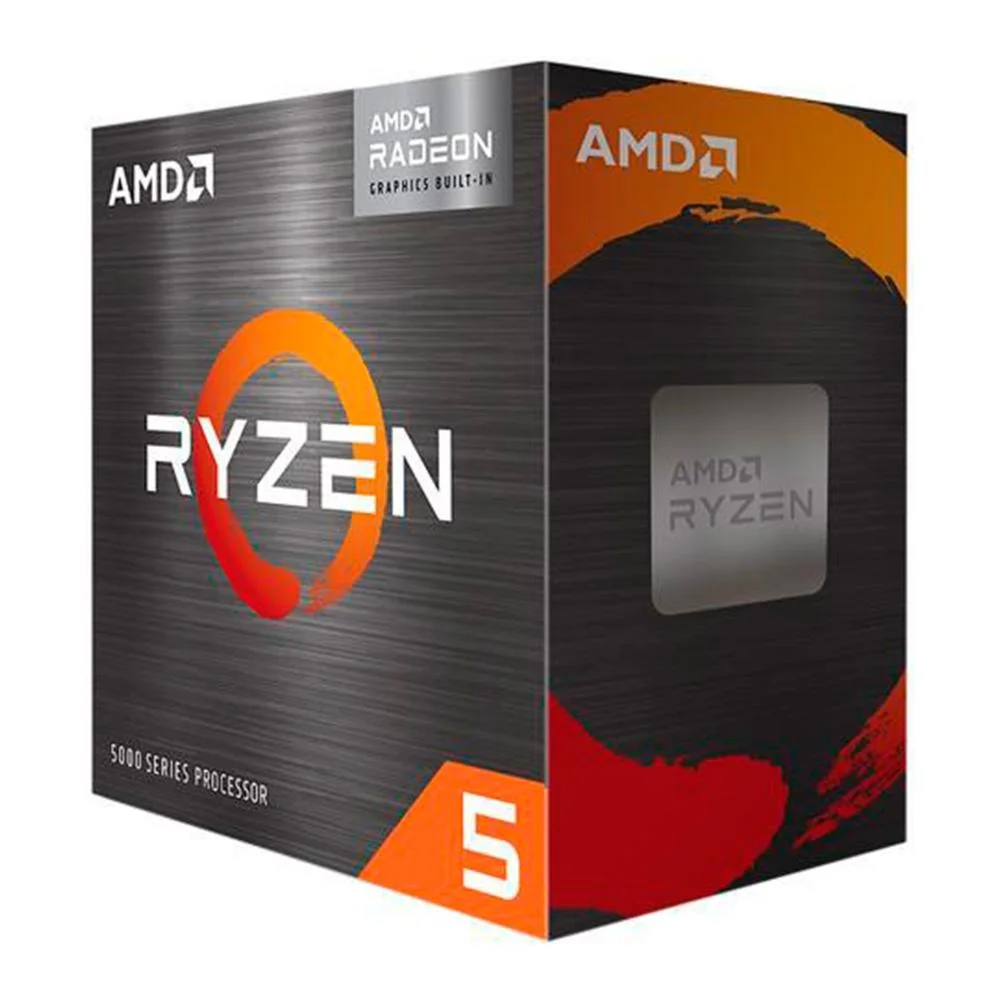
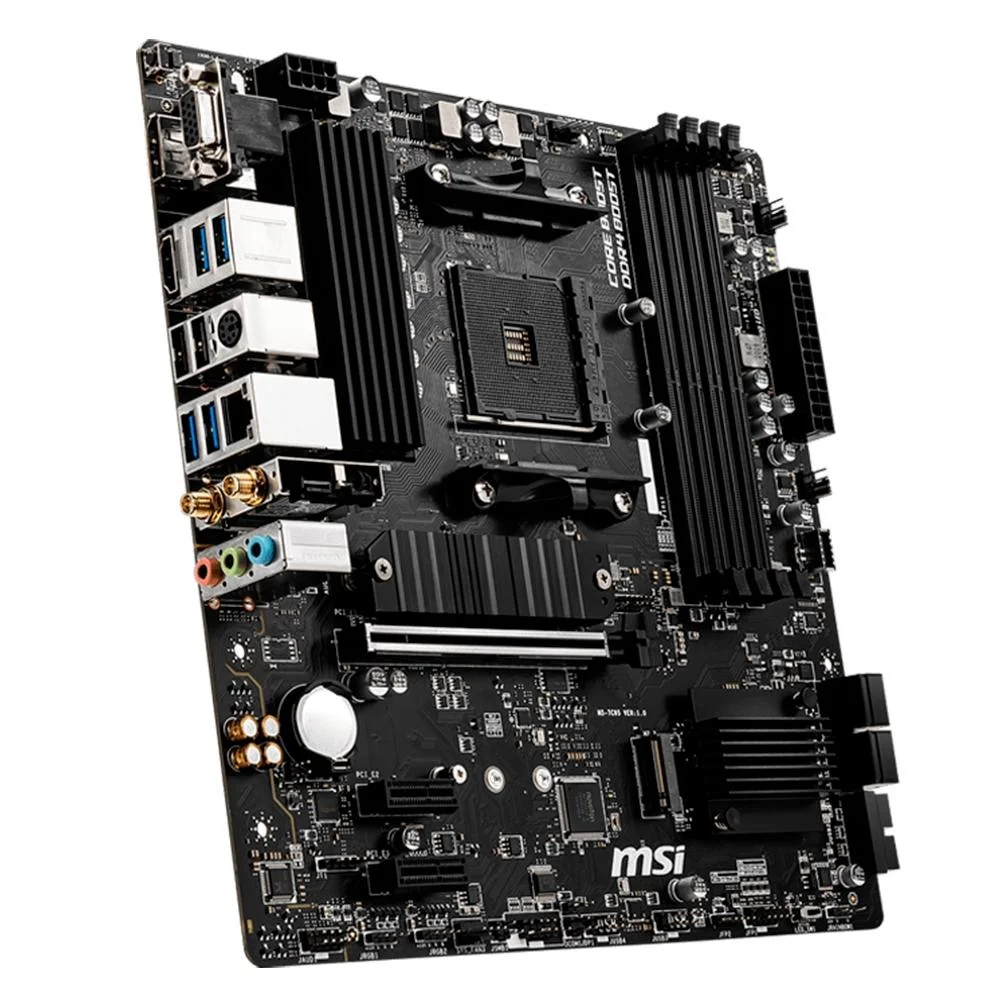
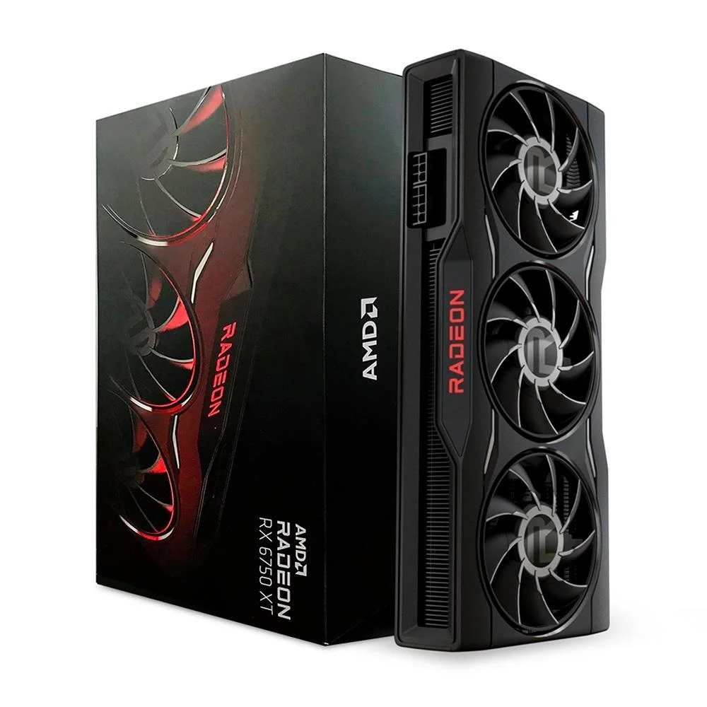
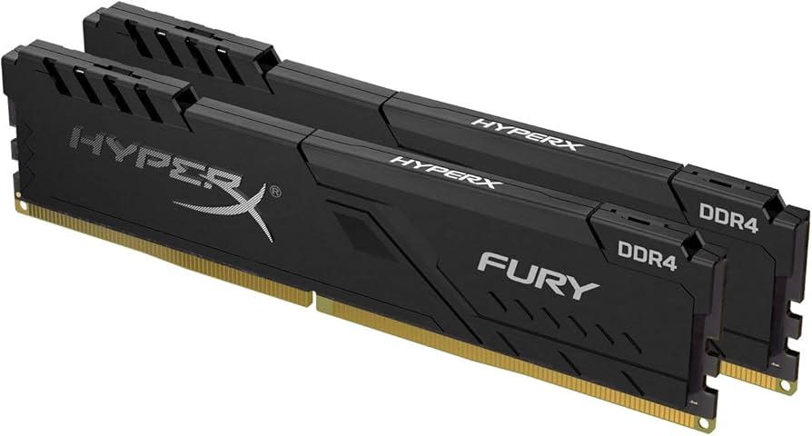
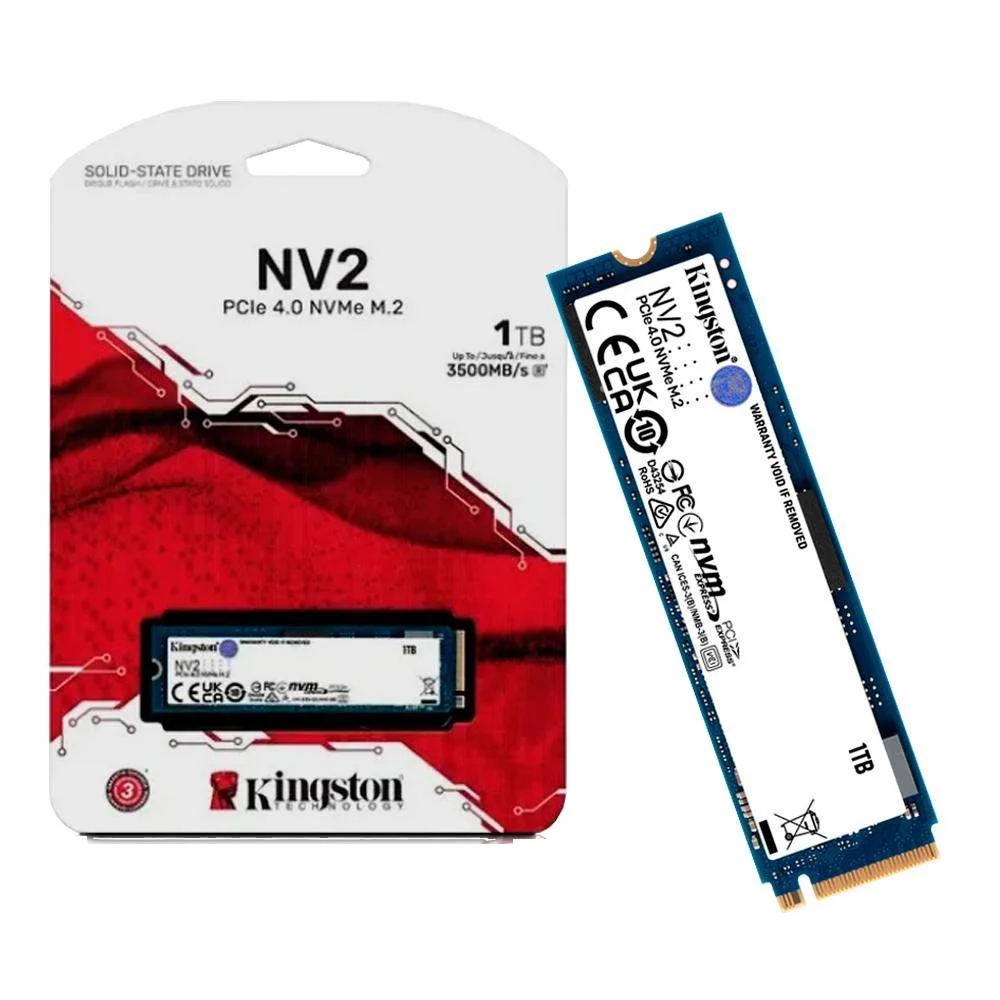
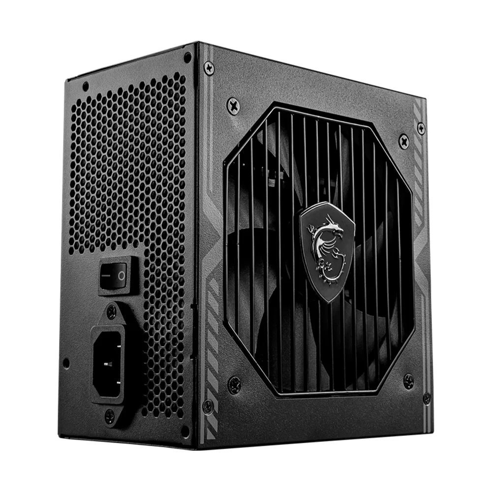
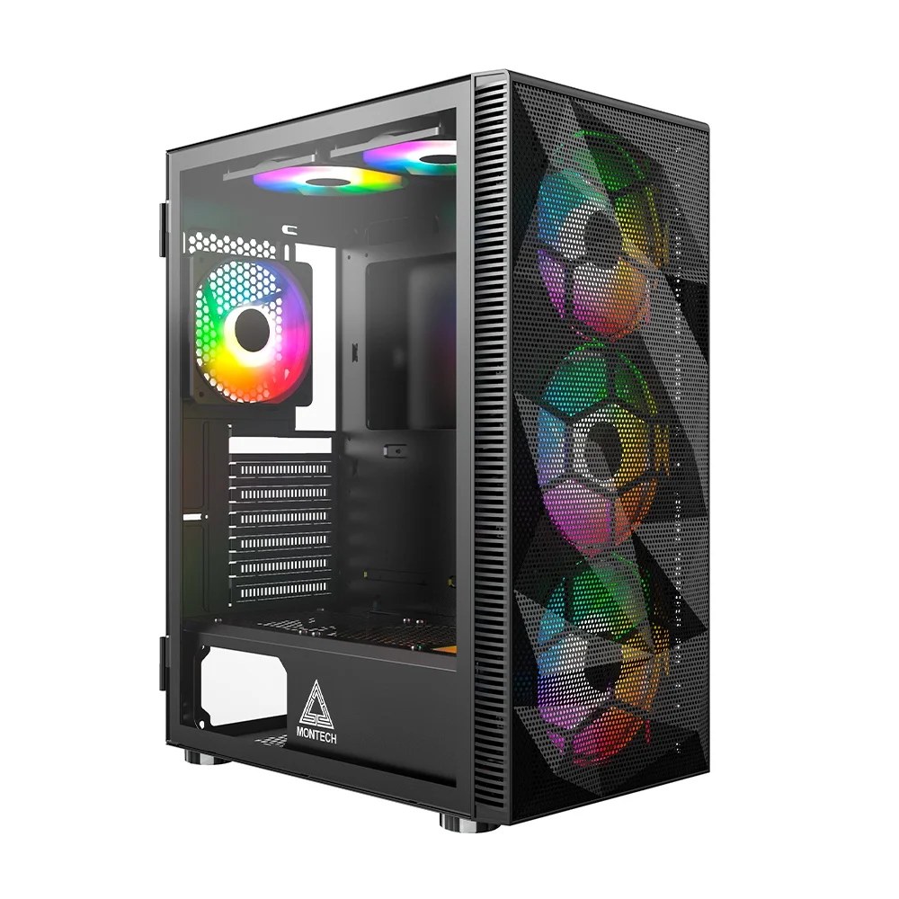

Confira as peças escolhidas para o melhor equilíbrio entre preço e performance em 2026:

Preço Médio: R$ 850. Um processador de 6 núcleos e 12 threads que ainda domina o segmento intermediário.

Preço Médio: R$ 750. Oferece suporte a PCIe 4.0 e já vem com WiFi integrado.

Preço Médio: R$ 2.100. Excelente para jogar em 1440p com alta taxa de quadros.

Preço Médio: R$ 450. Configuração em dual-channel para extrair o máximo do processador.

Preço Médio: R$ 450. Espaço e velocidade de leitura de 3500MB/s.

Preço Médio: R$ 300. Certificação 80 Plus Bronze para garantir energia segura.

Preço Médio: R$ 250. Painel frontal em mesh e 6 ventoinhas inclusas para máximo fluxo de ar.